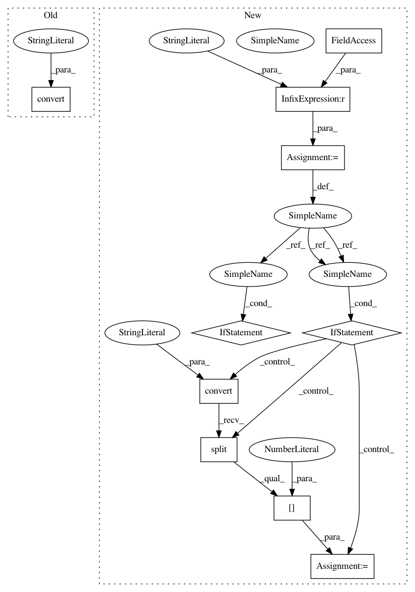

7c57e6f2de0795edef5aed8cbcebb1243ba86191,lib/reconstruct.py,,image,#Any#Any#Any#Any#,126
Before Change
dst = blockwise(src[:, :, 0], model, block_size, batch_size)
dst = np.clip(dst, 0, 1) * 255
src[:, :, 0] = dst[:, :, 0]
dst = Image.fromarray(src, mode="YCbCr").convert("RGB")
elif model.ch == 3:
src = np.array(src.convert("RGB"), dtype=np.uint8)
dst = blockwise(src, model, block_size, batch_size)
dst = np.clip(dst, 0, 1) * 255
After Change
else:
dst = dst.convert("RGB")
elif model.ch == 3:
y2rgb = src.mode == "L"
if y2rgb:
src = iproc.y2rgb(src)
src = np.array(src, dtype=np.uint8)
dst = blockwise(src, model, block_size, batch_size)
dst = np.clip(dst, 0, 1) * 255
dst = Image.fromarray(dst.astype(np.uint8))
if y2rgb:
dst = dst.convert("YCbCr").split()[0]
return dst
In pattern: SUPERPATTERN
Frequency: 3
Non-data size: 10
Instances
Project Name: tsurumeso/waifu2x-chainer
Commit Name: 7c57e6f2de0795edef5aed8cbcebb1243ba86191
Time: 2018-02-23
Author: nstm101339@gmail.com
File Name: lib/reconstruct.py
Class Name:
Method Name: image
Project Name: tsurumeso/waifu2x-chainer
Commit Name: 7c57e6f2de0795edef5aed8cbcebb1243ba86191
Time: 2018-02-23
Author: nstm101339@gmail.com
File Name: lib/reconstruct.py
Class Name:
Method Name: image_tta
Project Name: tsurumeso/waifu2x-chainer
Commit Name: 96d99ac0a6b0810147d8d6e2647be926a131457e
Time: 2018-02-25
Author: tsurumeso@gmail.com
File Name: lib/reconstruct.py
Class Name:
Method Name: image_tta